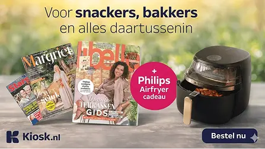
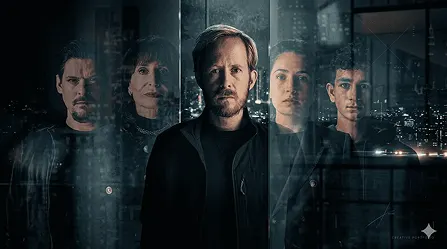
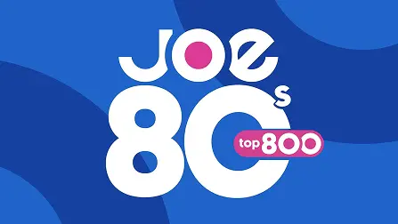

Creatieve Front-end Developer
Ik ben Jurjen, een creatieve developer met een passie voor front-end ontwikkeling, animaties en AI-integraties.
Jurjen
Veenstra
Ik ben Jurjen, een creatieve developer met een passie voor front-end ontwikkeling, animaties en AI-integraties.

Schaalbare displaycampagne voor DPG gericht op het verhogen van abonnementen. Modulair opgezet zodat honderden varianten efficiënt uitgerold konden worden.

Story-driven campagne voor Videoland waarin de trailer centraal staat. Ontworpen om binnen seconden de sfeer van de serie over te brengen en aandacht vast te houden.
Interactieve campagne die banners verandert in een speelse ervaring. Ontworpen om gebruikers actief te betrekken in plaats van alleen te bereiken.

Dynamische campagne gekoppeld aan live radiodata. Content werd realtime geüpdatet op basis van de uitzending.
Campagne gericht op het visueel maken van financieel voordeel. Dynamische animaties vertalen cijfers naar directe en begrijpbare impact voor de gebruiker.
Automatiseert projectrapportages door data en AI te combineren. Zet losse informatie om in directe en bruikbare inzichten voor teams.
Slimme inbox die e-mails begrijpt op context. Vervangt handmatig sorteren door slimme, geautomatiseerde verwerking.
Ik ben Jurjen, een creatieve developer met een passie voor front-end development, animaties en AI-integraties. Ik werk graag aan interactieve en visueel sterke digitale ervaringen waarin techniek en design samenkomen.
Mijn carrière begon op het mbo met de opleiding Applicatie- en Mediaontwikkelaar. Daarna heb ik de studie Communication & Multimedia Design afgerond aan de Hanzehogeschool. Tijdens deze opleidingen heb ik bij meerdere bedrijven stage gelopen en waardevolle praktijkervaring opgedaan.
Tijdens mijn stage bij PINK kreeg ik de kans om naast mijn studie te blijven werken, waardoor ik mij verder kon ontwikkelen als developer. Voor mijn afstudeerproject werkte ik aan Pexi (onderdeel van PINK). Na het succesvol afronden van mijn afstuderen kreeg ik een fulltime contract aangeboden bij PINK, waar ik met veel plezier heb gewerkt en veel ervaring en inzichten heb opgedaan.